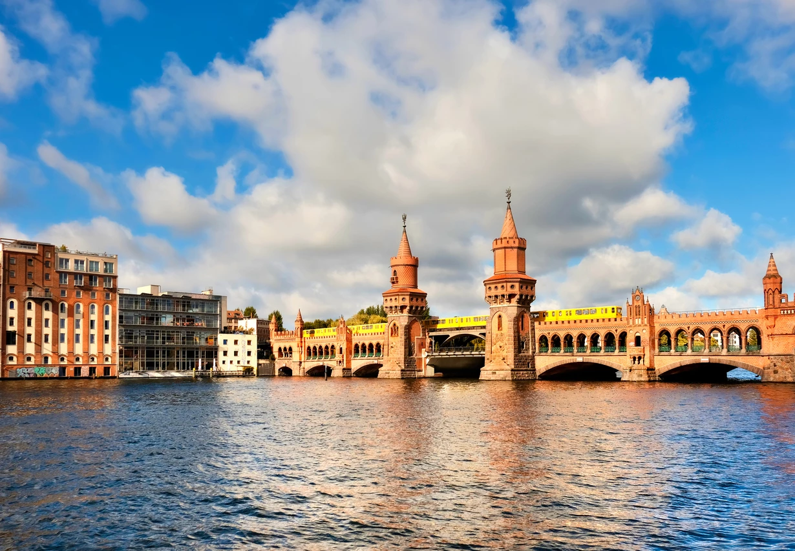
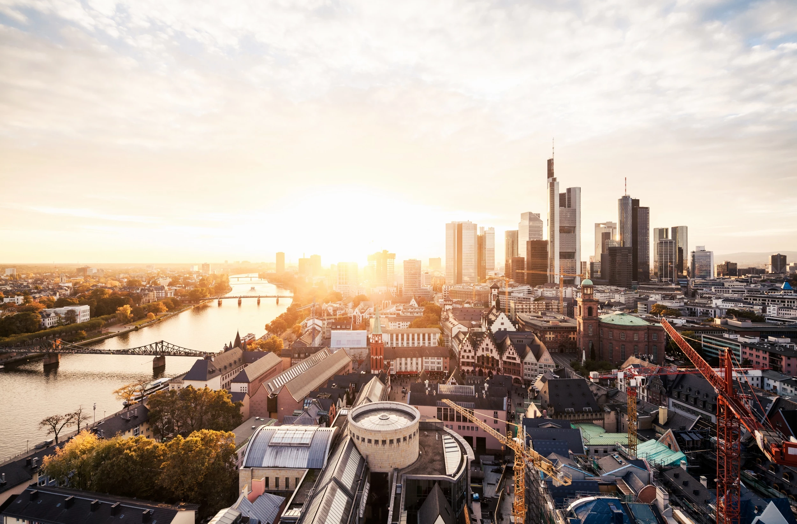
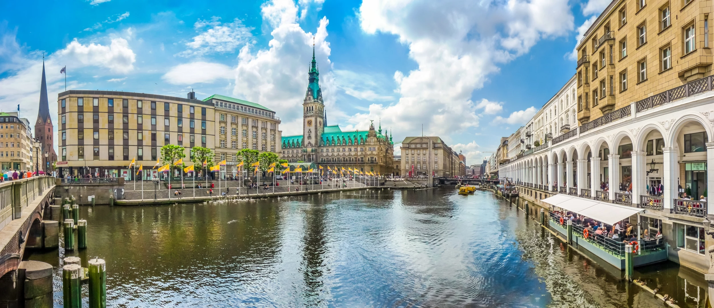
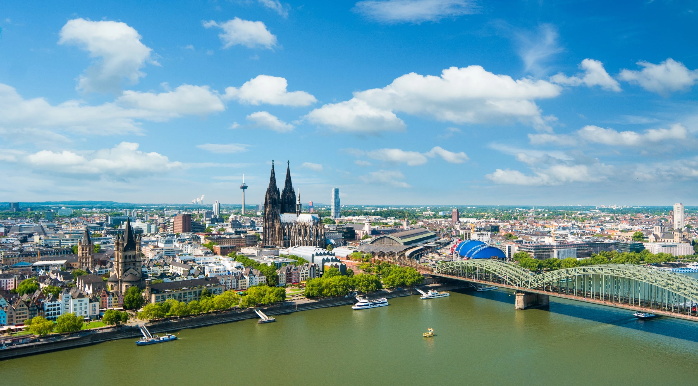
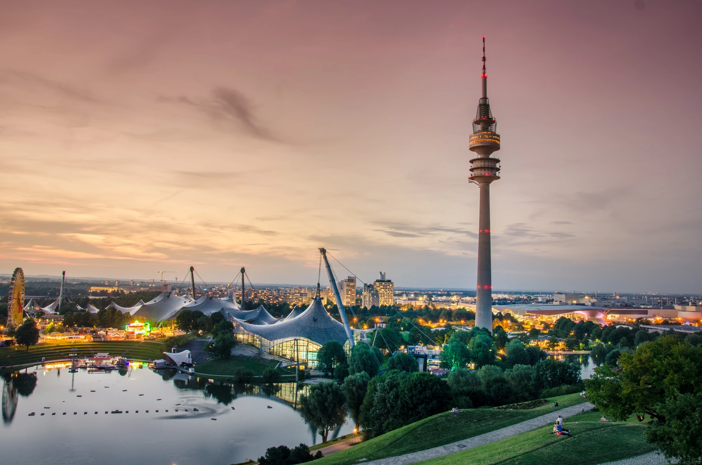

Berlin
Almanya’nın başkenti ve en büyük şehri olan Berlin, hareketli gece hayatı ve dünyanın her
yerinden ziyaretçi çekmeyi başaran kültürel etkinlikleri ile bilinir. Berlin'in tüm yıla
yayılan kültürel takvimi; festivaller, konserler ve partilerle dolup taşar. Brandenburg Kapısı,
Checkpoint Charlie, Kaiser Wilhelm Anıt Kilisesi, Berlin duvarının kalıntılarının sergilendiği
East Side Gallery ve yeni Reichstag binası, şehirde görülmeye değer yerler arasında başı çeker.

Frankfurt
Frankfurt, her yıl çok sayıda uluslararası ticaret fuarına ev sahipliği yapar. Yılda ortalama 80 fuar
ve serginin düzenlendiği şehirde yüksek binalar ve modern mimari yapılar dikkat çeker. Şehrin alışveriş
merkezi Hauptwache ve eski kent merkezi Römerberg, Frankfurt’ta gezilip görülmesi gereken başlıca yerler
arasında bulunur.

Hamburg
Almanya’nın en kalabalık ikinci şehri olan Hamburg; yüksek yaşam standartlarına, kozmopolit bir yaşam
tarzına ve muhteşem bir mimariye sahiptir. Büyük bir liman şehri olan Hamburg’da Orta Çağ'da inşa edilen
ticari yapılara ait izler günümüzde de görülebilir. St. Michael Kilisesi, tarihi belediye binası, botanik
bahçe, geleneksel yarı ahşap evlerin bulunduğu birkaç caddeden biri olan Deichstrasse bölgesi ve gece
hayatı ile ünlü Reeperbahn Mahallesi, şehrin başlıca cazibe merkezleri arasında yer alır.

Köln
Almanya’nın en büyük dördüncü kenti olan Köln; modern alışveriş merkezleri, eğlenceli gece hayatı ile
görülmeye değer bir şehirdir. Ren Nehri çevresine kurulan kent, medya ve endüstri kuruluşları anlamında
da ülkenin en önemli şehirlerinden biri olarak kabul görür. Tam anlamıyla bir Gotik mimari şaheseri
olan Köln Katedrali, Almanya’nın en ünlü yapıları içinde yer alır. Çikolata Müzesi’nin ve Kolumba
Müzesi’nin de Köln'de gezilecek yerler listesinde mutlaka yer alması önerilir.

Münih
Resmi olarak 1158 yılında kurulan Münih şehri, 1503'ten beri Bavyera'nın başkenti olarak kabul edilir.
Almanya’nın en büyük üçüncü şehri olan Münih, ülkenin en büyük eyaletlerinden biri olan Bayern’de yer
alır. Müzelere ve sanat etkinliklerine ev sahipliği yapan şehir merkezine yürüyerek kolayca ulaşılabilir.
Büyüleyici eski şehir; Rönesans, Barok, Gotik ve neo-klasik tarz mimarinin en güzel örneklerine ev
sahipliği yapar. Şehir merkezinde Marienplatz olarak adlandırılan geniş bir kafe ve restoran alanı bulunur.
Marienplatz Meydanı’nın yakınında yer alan Altes Rathaus (Eski Belediye Sarayı) ve Neues Rathaus (Yeni Belediye Sarayı)
şehrin en önemli turistik lokasyonları içinde gösterilebilir.

Stuttgart
Ülkenin tarihi, kültürel ve sanatsal anlamda en önemli şehirlerinden biri olan Stuttgart’ta, ekonomik
ve endüstriyel faaliyetler yoğundur. Rönesans tarzı ile bilinen Altes Schloss (eski kale), Barok tarzı
ile öne çıkan Neues Schloss (yeni kale) ve şehrin en modern yapılarından biri olan Mercedes-Benz Müzesi,
Stuttgart’ta gezilip görülebilecek başlıca yerler arasında bulunur.